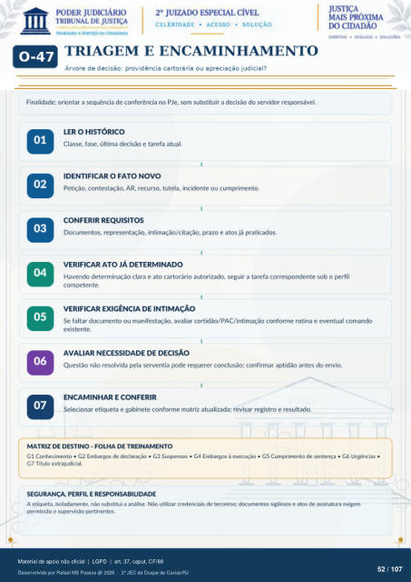

MÓDULO COMPLEMENTAR
TRIAGEM E ENCAMINHAMENTO
Árvore de decisão: providência cartorária ou apreciação judicial? Finalidade: orientar a sequência de conferência no PJe, sem substituir a decisão do servidor responsável.
LER O HISTÓRICO
Classe, fase, última decisão e tarefa atual. ·
IDENTIFICAR O FATO NOVO
Petição, contestação, AR, recurso, tutela, incidente ou cumprimento. ·
CONFERIR REQUISITOS
Documentos, representação, intimação/citação, prazo e atos já praticados. ·
VERIFICAR ATO JÁ DETERMINADO
Havendo determinação clara e ato cartorário autorizado, seguir a tarefa correspondente sob o perfil competente. ·
VERIFICAR EXIGÊNCIA DE INTIMAÇÃO
Se faltar documento ou manifestação, avaliar certidão/PAC/intimação conforme rotina e eventual comando existente. ·
AVALIAR NECESSIDADE DE DECISÃO
Questão não resolvida pela serventia pode requerer conclusão; confirmar aptidão antes do envio. ·
ENCAMINHAR E CONFERIR
Selecionar etiqueta e gabinete conforme matriz atualizada; revisar registro e resultado.
MATRIZ DE DESTINO - FOLHA DE TREINAMENTO
G1 Conhecimento · G2 Embargos de declaração · G3 Suspensos · G4 Embargos à execução · G5 Cumprimento de sentença · G6 Urgências · G7 Título extrajudicial.
SEGURANÇA, PERFIL E RESPONSABILIDADE
A etiqueta, isoladamente, não substitui a análise. Não utilizar credenciais de terceiros; documentos sigilosos e atos de assinatura exigem permissão e supervisão pertinentes.
Ver também o infográfico original (página 52)
